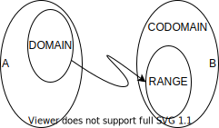

Categories
Sources
- https://medium.com/@sinisalouc
- https://medium.com/free-code-camp/demystifying-the-monad-in-scala-cc716bb6f534
- https://medium.com/free-code-camp/demistifying-the-monad-in-scala-part-2-a-category-theory-approach-2f0a6d370eff
- https://palatable.github.io/lambda/
- https://typelevel.org/cats/nomenclature.html
Terminology

- Exactly 1 to 1 mapping from A to B, where the valid inputs are called $\color{red}{domain}$ and the valid outputs $\color{blue}{range}$.
- Often the exact $\color{blue}{range}$ of a function is not known, but one coulde describe a set, which contains the range - the $\color{blue}{codomain}$.
flattenalso known asjoinflatMapalso known asbind- There are only three numbers in programming: 0, 1, and many.
Laws
- axioms of an abelian group
- identity (neutral element): $a + 0 = a = 0 + a$
combine(x, empty) = combine(empty, x) = x,fa.map(x => x) = fa - inverse: $a + (-a) = 0 = (-a) + a$
- commutative: $a + b = b + a$
- associative: $(a + b) + c = a + (b + c)$
combine(combine(a, b), c) = combine(a, combine(b,c))
- identity (neutral element): $a + 0 = a = 0 + a$
- distributive: $a + (b * c) = ab + ac$
- abosirbing element: $a + NaN = NaN$
- closure of operation: $T + T = T$
- coefficient: $a + alpha*b$ - think of vector space
- cycle of order $N$ : $a + N = a$ - think of cyclic group
- composition example:
u.map(x => g(f(x))) = u.map(f).map(g) = fa.map(f.andThen(g))
Usages
- So if you have e.g. n asynchronous requests (e.g. database queries) that result in n Futures, you should pick a proper abstraction based on your needs:
- if your Futures don’t depend on each other, use an applicative (you can e.g. put them all into one product and map each result with a function that handles success/failure)
- if your Futures do depend on each other, e.g. you want to call them in series and stop on first success or first failure, then use a monad (it allows you to flatMap a future with a function that examines its value and performs the next monadic operation based on it)
- This is why you can only build a parser for context-sensitive grammars by using monads, while for context-free grammars it’s enough to use applicatives.
Category theory for Programmers
- Category theory is extreme in the sense that it actively discourages us from looking inside the objects. An object in category theory is an abstract nebulous entity. All you can ever know about it is how it relates to other objects — how it connects with them using arrows. In object-oriented programming, an idealized object is only visible through its abstract interface (pure surface, no volume), with methods playing the role of arrows. The moment you have to dig into the implementation of the object in order to understand how to compose it with other objects, you’ve lost the advantages of your programming paradigm.
- !!! You may think of objects and categories as nouns; and morphisms, functors, and natural transformations as verbs. Morphisms connect objects, functors connect categories, natural transformations connect functors.
- See CHAPTER 28 ENRICHED CATEGORIES: Metric Spaces: We have to construct a category in which hom-objects are distances. Mind you, distances are not morphisms but hom-objects.
almost nice example
How to Build a Functional API - Julien Truffaut
Algebraic Data Types
- based on (Sinclair, 2019)
- An algebraic structure on a set A is a collection of finitary operations on A. The set A together with this algebraic strcuture is called algebra.
- monoid, aplicative, semigroup, lattice, fucntor, monad - these are all allgebraic strucutres.
- Algebraic structures represent templates for solving a problem (like design patterns), and have their basis in mathematics (unlike design patterns). So they tend to be formely defined, and to conform to specific laws.
- Laws do not make algebraic structures more restricitve, but rather give allow making dedcutions and assumptions on how the code works.
- More often the explanaints of an algebraic structure are not about the problem it solves, but about the loaws it conforms to.
- It is not until instances like
Maybe,EitherorEffectare created, that anything useful can be done.
- TypeClasses are used to implement algebraic strucutres. They enable parametric polymorphism, which allow the use of the same function with different types, even when the exact type is not known upfront.
- Algebraic Data Types - it is about the possibilites.
- algenraic data types = composable data types
- Product (AND): a class conainting 3 variables (
a,b,c), whereaandbcan have 2 values (e.g. boolean) andccan have 10 values, the calss can hace $2x2x10=40$ possibilities. In reality Product classes may have infinitely many possibilities. - Sum (OR): a class representing a direction with four values
east,west,southandnordcan have only one of these four direction. Hence all possibilities are $1+1+1+1=4$. AnEithercan be onlyLeftorRight, but not both. - Generaly Sum have more limited range of values, and it can be very useful to know the precise number of combination. as it is a way of making assertions about the code with mathematical certainty. Therefore they are useful to model the business domain.
Functional programmer toolbox
- based on (Wlaschin, 2019)
- Look at a function as a standalone thing. Much like a LEGO.
- Most of the tools in the functional toolbox are “function transformers” tht convert functions to functions.
- Lego blocks have “no strings attached”. They can be assembled into one thing (car), the de-assembled and re-assmbled int another thing (airlplane). Same is with functions - they should have “no strings attached” to a particular context.
- Design functions context-free, to work together, use types to ensure inputs match outputs.
- Just 11 tools to know:
composefor compositionfoldfor iterationcombine&reducefor combination/aggregation Monoid. If an identity (0) is missing then it is called Semigroup. If you add an inverse value then it becomes a groupvalue + inverse value = neutral element.map&returnfor mixing effects and non-effects Functorbind/flatmapfor chaining effects in series Monadapply&zipfor working with effects in parallel Applicative. In cats it is explained thruproduct()sequence&traversefor pulling effects out of a list
- Tool 1 Monoid: combine a bunch of things, two at a time. Knows as “plus” for numers, “concat” for strings, …
- Rule 1 (Closure): the result of combining two things is always anotherone of the same thing.
- Benefit: converst pairwise operations into operations that works on list => reduce (a.k.a. collapse)
1+2+3+4toList.of(1,2,3,4).reduce(+)
- Rule 2 (Associativity): when combining more than 2 things, it doesn’t matter which pairwise combination you do first.
- Benefit: paralellization, incremental accumulation, …
1+2+3+4to(1+2)+(3+4), from1+2+3to(1+2+3) + 4 = 6 + 4
- Rule 3 (Identity): there is a special thing called “zero”, such that when combining any thing with “zero” you get the original thing back. If missing => Semogroup. 0 for summation, 1 for multiplication, “” for string concatenation
- Benefit: initial value, starting data, missing data
- Any combination of monoid is also a monoid. Turning something that is not a monoid to a monoid is called “map”, that calpping the whole thing to a single value is “reduce”, hence “map/reduce”
- Is function composition a monoid? If
int->int,str->stryes, but ifint->strno, as input and output are not the same type.
- Rule 1 (Closure): the result of combining two things is always anotherone of the same thing.
- Effect A generic type
List, a type with extra dataOption, Result, a type that cna change the outside worldAsync, Task, Random, a type that carries stateState, Parser. Like a parallel world of the normal one: instead ofString->List<String>.- Code smell: constantly switching between normal and effect world (a.k.a. wrap->unwrap-wrap). So convert (lift) something in a async/option/… efect and work there until the end of the program.
- let’s say we have a function that adds 42 to a number, and we want to use it in the Option word. But this would mean unwrap the value, add 42, wrap it again (code smell), so here is where “map” comes.
- Tool 2 Map Moving functions between worlds with
map. Functor is an effect type with amapfunction that “lifts” a function to the effect world. And it must have a sensible implementation => functor laws. - Tool 3 Return Moving values between worlds with
return. (a.k.a.of(),from(),pure(),unit(), etc.) - Tool 4 Bind Chaining world-crosing functions with
bind(a.k.a.flatmap).- World-crossing function: input is a value in normal world and output is value in Option world:
customerId -> Optional<Customer>. - Railway pattern, for kind of having two-output to two-input function (two-track in/out).
- Monad is an effect type with a
returnfunction and abindfunction that “converts” a cross-wrold function into a effect-world function. And it must have a sensible implementation => monad laws. - Connection between Monads and Monoids: Combining 2 monads resulting in another monad is a Kleisli Composition, where associativity works same way as in monoids.
- World-crossing function: input is a value in normal world and output is value in Option world:
- Tool 5 Parallel combination Combining effects in parallel with applicatives.
- Combining Options:
Some(42) combine Some(hello) => Some(42, "hello"),Some(42) combine None => None - Combining List: 2 ways
[1,2] combine [a,b] =>with cross product[(1,a),(1,b),(2,a),(2,b)], with zip[(1,a),(2,b)]. - Applicative is an effect type with a
returnfunction and afunctionthat combines two effects into onepair,apply. And it must have a sensible implementation => applicative laws. - In a normal world name, address, socialNumebr can be combined in a constructor. Hence take the constructior finction and lift it up in the result world. From
Result<Name, ErrMsgs>, Result<Address, ErrMsgs>toResult<Customer, List<ErrMsgs>>, where Error messages are combined inList<Errmsgs>, hence the list is a monoid. So this example is with an Applicative and Monoid.
- Combining Options:
- Example:
- Download a URL into a JSON file:
UrltoAsyncResult<Json> - Decode the JSON into a Customer DTO:
JsontoResult<CustomerDTO> - Convert the DTO into a valid Customer:
- validate fileds:
CustomerDTOtoResult<Name>, Result<Address>, Result<BDate> - convert:
validName, validAddress, validDatetovalidCustomer
- validate fileds:
- Store the customer in a DB:
validCustomertoAsyncResult<unit>// `R<Json> bind R<CustomerDTO> bind R<Customer>`, then compose them into one function `R<Json> -> R<Customer>` let proccessCustomerDto jsonOrError = jsonOrError |> Result.bind decodeCusotmerDto |> Result.bind createValidCustomer // use `map` to move from `Result` to `AsyncResult` world `AsyncR<Json> -> AsyncR<Customer>` let downloadAndStoreCustomer url = url |> dowloadFile |> Async.map proccessCustomerDto |> AsyncResult.bind storeCustomer
- Download a URL into a JSON file:
Domain modeling with monoids
- base on (Martraire, 2018)
- Monoids of monoids are also monoids.
- Another alternative to
Eitheris to have an error case value, likeDouble.NaN. Hence a property of Absorbing elementa combine NaN = NaN. ```java record Range(int min, int max){ // public final static Range NotARange; // similar ot Double.NaN public final static Range EMPTY = new Range(0,0); public Range combine(Range that) { // aka add() return new Range( Math.min(this.min, that.min), Math.max(this.min, that.max) ); } }
record Average(int count, int sum){ public static final Average NEUTRAL = new Average(0,0); public Average of(int… values){ return new Average( values.length, Arrays.stream(values).sum()); } public Average combine(Average that){ // aka add() return new Average( this.count + that.count, this.sum + that.sum); } double average() { return (double) sum/count;} }
record Ratio(int numerator, int denominator){ public static final Ratio NEUTRAL = new Ratio(1,1); public Ratio combine(Ratio that){ // aka multiply() return new Ratio( this.numerator * that.numerator, this.denominator * that.denominator); } double ratio() {return (double) numerator / denominator; } }
@Monoid(neutralElement=”one”, operation=”multiply”) @Monoid(neutralElement=”zero”, operation=”add”)
record Balance(int balance, boolean error){ public static final Balance NEUTRAL = new Balance(0,false); public static final Balance NOT_A_BALANCE = new Balance(0,true); public Balance combine(Balance that){ if(this.error || that.error) return NOT_A_BALANCE; return new Balance(this.balance * that.balance, false); } }
* If you just have the closure of the operation, then it's called a **magma**. It's a much weaker structure than **monoids**. If you also have associativity, then it's called a **semigroup**. If you add the neutral element, then it becomes a **monoid** indeed. If for any value there exists an **inverse value**, then the monoid becomes a **group**. It's a strong property to have inverses for all values. For example, natural integers don't have inverse
with respect to addition, but signed integers do: $3 + (-3) == 0$. In business domains, having inverses is less frequent, so **groups** are less frequently used than **monoids**. **Groups** are all about compensation, with inverse values that can always compensate the effect of any value. Going further, if we can compose not just whole elements but also compose values **partially**, then we have a vector space. For example we would write that $(1, 3) + 0.5(6, 8) = (4, 7)$. Notice the coefficient (the real number 0.5 here) that modulates the impact of the second term.
* **!!! Distributed data and commutative property** : Any structure that happens to yield the same result regardless of the ordering of the values is called **commutative**: $a + b = b + a.$ This is a very strong property, not so frequent, so don't expect it too much in domain modeling, but if you see it or manage to make it so, go for it. **Commutativity** helps a lot especially for situations of "out of order" events, for example when distributed systems communicate through a network, it’s frequent for events `a, b, c` that used to be in this ordering to arrive out of order, e.g. `b, a, c`. Being **commutative** is the most elegant way to deal with that. Exotic structures like CRDT (Conflict-free replicated data type) rely on **commutativity** for that, but it’s far beyond the scope of this text.
* **Cyclic Group** and its key idea is the modulo, hence the name cyclic. The days of the week form such a cyclic group of order 7 and the months of the year are another of order 12. Cyclic groups have a finite number of values, and when you reach the last value your cycle back to the first one: if the order of the cyclic group is $3$, then the values are ${0, 1, 2}$ and $2+1 = 0$. One of interest is that every cyclic group of order $N$ is isomorphic (think equivalent) to the one on integers of order $N$, called $Z/nZ$. This means in practice that you can always implement it with integers as the internal state and modulo arithmetics.
* **Ring** for example generalizes the arithmetic operations of addition and multiplication. It extends a commutative group (addition) with a second operation (multiplication), and requires that this second operation **distributes** with the first one: $a*(b+c) = a*b + a*c$.
* It happens that putting several structures next to each other as fields (**product types**) usually preserves the relation if the operation on the whole is defined as the field-wise operation of each of the components. This explains why so many domain concepts *inherit* part of their internal implementation structure, unless you mess with their operation. Think about it when you implement
* [Example with supply chain environmental impact](https://gist.github.com/cyriux/a263efb9c483bcefe72e49c3343ff24e)
## Scala example
``` scala
implicit val intAdditionMonoid: Monoid[Int] = new Monoid[Int] {
def empty: Int = 0
def combine(x: Int, y: Int): Int = x + y
}
def combineAll[A](list: List[A])(implicit A: Monoid[A]): A = list.foldRight(A.empty)(A.combine)
Functora type class that abstract over type constructor that can be mapped over (e.g.List,Option,Future), where it must obeys $\color{green}{identity}$ and $\color{green}{composition}$ laws.
TheFis often reffered as effect or computational context. Different effects will abstract away different behaviors with respect to fundamental functions like map. For instance,Option’s effect abstracts away potentially missing values, where map applies the function only in theSomecase but otherwise threads theNonethrough.- Occasionally it is a bit difficult to work with nested data types like
List[Option[A]]. ButFunctors cancompose, which means ifFandGhaveFunctorinstances, then so doesF[G[_]]val listOption = List(Some(1), None, Some(2)) // listOption: List[Option[Int]] = List(Some(1), None, Some(2)) Functor[List].compose[Option].map(listOption)(_ + 1) // res: List[Option[Int]] = List(Some(2), None, Some(3))
Java example
// left identity
Function<Integer, Optional<Integer>> addOne = x -> Optional.of(x + 1);
Optional.of(5).flatMap(addOne).equals(addOne.apply(5))
// right identity
Optional.of(5).flatMap(Optional::of).equals(Optional.of(5))
// associativity
Function<Integer, Optional<Integer>> addOne = i -> Optional.of(i + 1);
Function<Integer, Optional<Integer>> addTwo = i -> Optional.of(i + 2);
Function<Integer, Optional<Integer>> addThree = i -> addOne.apply(i).flatMap(addTwo);
Optional.of(5)
.flatMap(addOne)
.flatMap(addTwo)
.equals(Optional.of(5)
.flatMap(addThree));
public static void main(String[] args) {
List<Line> line = List.of(
new Line(2, 19.98),
new Line(1, 1.99),
new Line(3, 3.99));
Optional<Line> reduce = line.stream().reduce(combine()); // line(6, 25.96)
}
// BiFunction
static BinaryOperator<Line> combine() {
return (line1, line2) -> {
var qty = line1.qty + line2.qty;
var total = line1.total + line2.total;
return new Line(qty, total);
};
}
record Line(int qty, double total){}
References
- Martraire, C. (2018). Domain modeling with monoids. https://www.arolla.fr/blog/wp-content/uploads/2018/10/DomainModelingwithMonoids.pdf
- Sinclair, J. (2019). Things I wish someone had explaind about functional programming. https://jrsinclair.com/articles/2019/algebraic-structures-what-i-wish-someone-had-explained-about-functional-programming/
- Wlaschin, S. (2019). The Functional Programmer’s Toolkit. https://www.youtube.com/watch?v=Nrp_LZ-XGsY